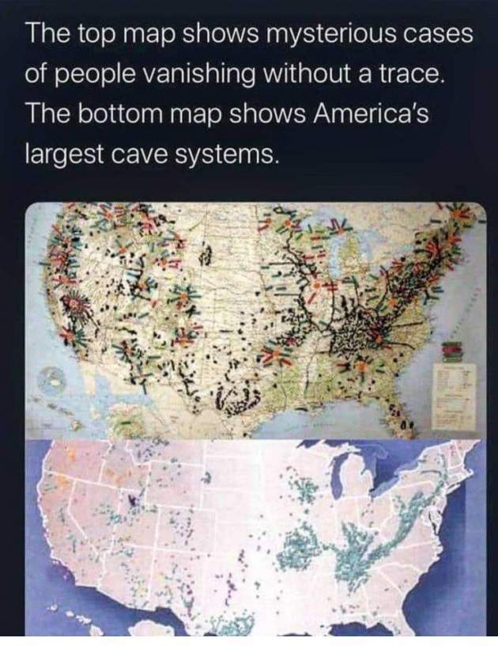
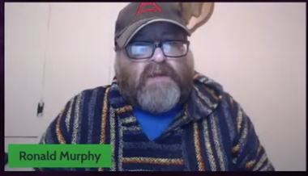
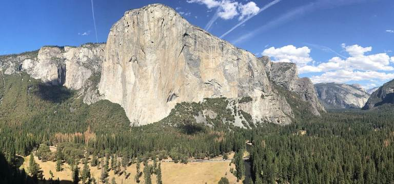
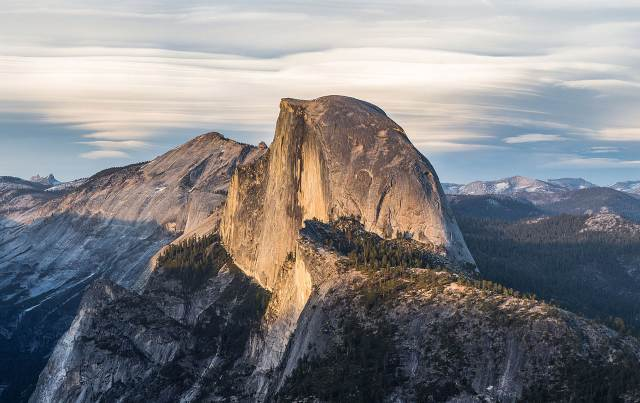
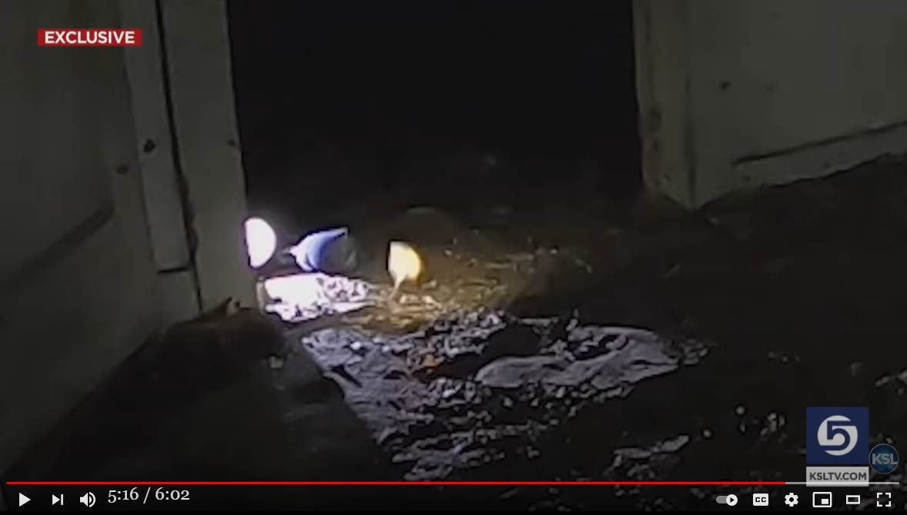

石灰岩や花崗岩地帯で怪奇現象が多発する理由

前置き
- ネット会議で Ronald Murphy（下）が鋭い疑問を提起をしている。疑問は鋭いが、惜しいことにその解明が portal が…、別次元が…、レイラインが…古代遺跡が…といった方向へ逸れてしまっている。  - DeepL 訳手抜き
what's your uh situation took place and and now deed so is it possible these creatures can be manifested from the the 35:46 Earth itself geographically geologically is there something going on in your particular parts of the world that it 35:53 allows these kind of manifestations to take place because in our area we're very rich in Limestone and granite and 36:01 it seems as if the Earth was able to manifest these things so that's actually a that's something 36:08 I've really really thought about um for several reasons one we do a lot of research out of brown Springs and 36:15 again Brown spring there is a spring on the Limestone again where I was limestone and I have several accounts 36:21 coming out of the not just of the pterosaurs but of Bigfoot being seen in 36:27 and around the 10 Mile Creek using the 10 Mile Creek and now I'm starting to get dogmen stories out of it so don't 36:35 don't get me wrong that absolutely flipped every alarm Bell in my head on 36:40 that このような生き物が地球から現れることはあり得るのでしょうか？ 地球そのものが地質学的に、世界の特定の場所で何かが起こっていて、それがこのような顕在化を可能にしているのでしょうか。 私たちの地域は石灰岩と花崗岩がとても豊富なので、このような現象が起こるのでしょう。 地球はこれらのものを顕在化させることができたように思います。 その理由はいくつかありますが、1つはブラウン・スプリングで多くの研究をしていることです。 またブラウン・スプリングはライムストーンにあるスプリングで、私がライムストーンにいた頃、いくつかの証言があります。 翼竜だけでなく、ビッグフットが目撃されたという証言もあります。 を使った10マイル・クリーク周辺での目撃談や、犬猿の仲であったという話もある。 誤解のないように言っておくと、私の頭の中の警鐘はすべて鳴り響いたのです。 その
what we find in a startling relations to the mound 39:06 builders is Dogman encounters as if they were the manifestations of this area as 39:12 well too um and what is odd about the dog man is that you know it's often you you would 39:17 think that it's not it deals with funerary aspects and deals with the Abode of the dead and if we take our 39:22 little pencil and we start connecting the dots we can go right over to Egypt and see Anubis carrying on the exact 39:28 same tradition so there's something about this idea why different cultures 39:33 who like I said through time and space connect these certain creatures with 39:38 different areas so if we're talking about Cryptids that we're also talking about something based within our 39:44 psychology as well too because we are attaching them unless they're attaching themselves to it we are attaching them 39:52 to certain areas you know and that is truly remarkable as well too even if 39:57 they're not flesh and blood animals even if they are simply figments of our imagination let us say let's just play 40:03 The Devil's Advocate there for a second then what we're saying is over the past five thousand years different cultures 40:08 are are looking at their environment and they're creating these dog man creatures 40:14 and making them have similar um you know occupations with those environments that's crazy to think 墳墓と驚くべき関係にあることがわかる。 犬男との出会いは、あたかも彼らがこの地域の現れであるかのようです。 そして、犬男について奇妙なことは、それはしばしば、あなたが思っているようなことである。 葬式を扱い、死者の住処を扱っていることです。 小さな鉛筆で点と点を結んでいくと、エジプトに行き、アヌビスが全く同じ伝統を受け継いでいるのを見ることができます。 同じ伝統を受け継ぐアヌビスを見ることができます。 なぜ異なる文化が、時空を超えて、特定の生き物を異なる地域と結びつけているのか。 このように、時空を超えて異なる文化が、ある特定の生き物を異なる地域と結びつけているのは、クリプトイドの話をしているのなら、私たちの心理に基づいた何かを話しているのだと思います。 心理学的な話でもあるのです。なぜなら、私たちは、彼らが自分自身に取り付かない限り、彼らを特定の領域に取り付けているからです。 そしてそれは、たとえ生身の動物でなくても、本当に驚くべきことなのです。 生身の動物でなくても、単なる想像の産物であっても。 ちょっと悪魔の代弁者になってみましょう。つまり、過去5千年の間に様々な文化が 過去5000年の間に、様々な文化が自分たちの環境を見て、このような犬型生物を作り出したのです。 そして、その環境と似たような...職業に就かせたのです。そう考えると、おかしな話ですが...動画(1:32:02)
OBSCURE CRYPTIDS ROUNDTABLE - Dean Bertram, Ron Murphy, & Jason McLean - Lon Strickler (Host)コメント 1
- 花崗岩が顕著な圧電効果を示すことは過去記事で取り上げた。 - 石灰岩の主成分は方解石だが、方解石（CaCO3）は六方格子系の結晶で圧電効果を示す。 - なので、Ronald Murphy の投げかけた「石灰岩と花崗岩地帯で超常現象が多発してるのはなぜか？」という疑問の答えは ・地殻を構成する岩石の圧電効果 → EMF 異常 → 一時的な意識障害 ということだろう(*1)。 - さらに、下の過去記事で地下洞窟が地帯の地図と Missing-411 事件多発地帯の地図がよく似ているという話を取り上げたが、洞窟地帯というのは石灰岩が侵食されて生じたものがほとんど。The top map shows mysterious cases of people vanishing without a trace. The bottom map shows Amrica's largest cave systems. ref: Missing-411 の多発地帯と大規模な地下洞窟地帯が関連？ (2020-06-27)- なお、地図の西側が上（missing-411 多発地帯）と下（洞窟地帯）で対応しないのは、西側で missing-411 が多発しているのは花崗岩地帯（例：ヨセミテ国立公園の下の巨岩が有名）だからということで十分に説明がつく。 El Captan By Jarek Tuszynski - Own work, CC BY 4.0, https://commons.wikimedia.org/w/index.php?curid=46913213
 Harl Dome By Diliff - Own work, CC BY-SA 3.0, https://commons.wikimedia.org/w/index.php?curid=26414121コメント 2
- 方解石の圧電効果についてチェックしていたら以下の論文要約を見かけた。その中の ・人間の松果体に存在する方解石微結晶による第二次高調波発生の観測と一致 という記述から精神世界のヨタ話かと思いきや、論文が掲載されたのは IEEE Transactions on Dielectrics and Electrical Insulation ( Volume: 25, Issue: 3, June 2018) とあり、権威ある IEEE なので査読が入っている筈で、意外。著者の 3人はみな、University of Limerick, Ireland だった。DeepL訳 要旨 本論文では、量子力学的モデリングと、天然に存在する方解石結晶および構造の電気機械的特性評価の組み合わせにより、方解石圧電性について予備的に定量的な調査を行ったことを報告する。アミノ酸やペプチドからウイルスや繊維状タンパク質に至るまで、結晶化した生体分子の対称性は低いため、強誘電性、焦電性、圧電性などの有用な電気的特性が得られる。ハイドロキシアパタイトやカルサイトなどの生体鉱物は、一般に圧電性とはみなされていません。このデータは、巨視的な方解石ベースの材料、すなわちアイスランドのスパーと様々な海岸の標本について、初めて準静的な縦方向の圧電を測定したものです。密度汎関数理論（DFT）計算により、この測定結果を実証した。この計算では、全方向の弱い残留圧電応答が、中心対称な方解石結晶に起因するとした。このデータは、人間の松果体に存在する方解石微結晶による第二次高調波発生の観測と一致する。 Abstract: Here we report a preliminary quantitative investigation into calcite piezoelectricity using a combination of quantum mechanical modelling and electromechanical characterisation of naturally occurring calcite crystals and structures. The low symmetry of crystallised biomolecules - from amino acids and peptides to viruses and fibrous proteins - can result in useful electrical properties, including ferroelectricity, pyroelectricity, and piezoelectricity. Biominerals such as hydroxyapatite and calcite are generally not considered piezoelectric. This data represents the first quasi-static, longitudinal piezoelectric measurements on macroscopic calcite based materials; namely Icelandic spar and a variety of beach specimens. We substantiate these measurements using Density Functional Theory (DFT) calculations, which attribute the measured weak, residual piezoelectric response in all directions to centrosymmetric calcite crystals. Our data is consistent with the observation of second harmonics generation by calcite microcrystals occurring in the human pineal gland. ref: https://ieeexplore.ieee.org/document/8410706(*1)
- 単なる圧電効果で強烈な EMF 異常（時にはガンマ線が生じたり、発火現象が生じたりするほどのレベルで、しかも非常に狭い範囲に集中）が発生するとは思えないので、局所的な増幅作用が併発している筈。以前、アンダーソン局在を疑ったが、もっとシンプルな別の作用――たとえば圧電効果の連鎖反応的な機序――が働いているのではないか。 (2022-09-26)
初出
Ronald Murphy : 石灰岩と花崗岩地帯で超常現象が多発するのはなぜ？ (2022-09-26)
2022-11-04 補足
不可解な発火現象は EMF 異常が原因だろう
- 上の 2022-09-26 の記事の中で
- 単なる圧電効果で強烈な EMF 異常（時にはガンマ線が生じたり、発火現象が生じたりするほどのレベルで、しかも非常に狭い範囲に集中）が発生するとは思えないので、局所的な増幅作用が併発している筈。以前、アンダーソン局在を疑ったが、もっとシンプルな別の作用――たとえば圧電効果の連鎖反応的な機序――が働いているのではないか。
と述べたが、そこでいう発火現象とは
シシリー島、イタリア：謎の出火事件の最近の調査結果 (2020-07-18)
や
22,05 TV 局がやってきた時。強力な電磁界の干渉（*1）によって drone （無人機）が墜落。さらに多種の観測機材が誤動作（*2）。その瞬間、雲間に黒い物体が飛行（*3）。 24:20 その夜、床板から炎（*4）が。  【編】Skinwalker Ranch : 謎の電磁界干渉が発生、同時に UFO が出現 （途中2） (2021-05-09)
さらには
- 人体発火現象
をも意味している。
異常現象と EMF 異常の関連を示す事例
- 異常現象と磁気異常の関連に関する過去記事が下。これらの事例は EMF 異常 → 磁気異常 → 異常現象 という因果関係を示している筈。 1947-06-24, F.M. Johnson ：UFO がコンパスの磁針を大きく揺らした。 (2020-03-11) シシリー島、イタリア：謎の出火事件の最近の調査結果 (2020-07-18) Brandon Fugal : Skinwalker Ranch : 不可解な牛の死→地下を掘ると異常現象。磁気異常も。 (2021-08-16) Christopher O'Brien : UFO や cattle mutilation は地磁気の極大と極小が隣接している地域で多発している。 (2019-02-01) Steve Mera ＋ Barry Fitzgerald : 謎の行方不明事件（Missing 411 ）は地磁気異常地帯で起きている。 (2019-07-23) Steve Mera : Missing 411（謎の行方不明事件）多発地帯は地磁気の異常地帯と重なっている。 （途中：その1） (2019-01-29) Steve Mera : 米政府が磁気異常地域と UFO 現象の関連を調査。 （＋追加） (2019-07-23) Steve Mera : 著名な UFO 事件は地磁気が極大となる地域で多発している。（途中：その1） (2019-02-01) Linda Moulton Howe : 磁界が崩壊すると、別次元から何者かが出現する。（＋追加2） (2018-11-06) ref: 迷って行方不明になりかけた人の証言: なぜかコンパスが狂っていた (2022-09-30)
(2022-11-04)